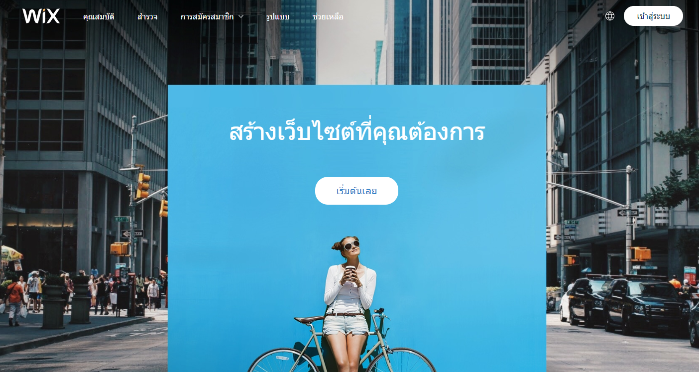
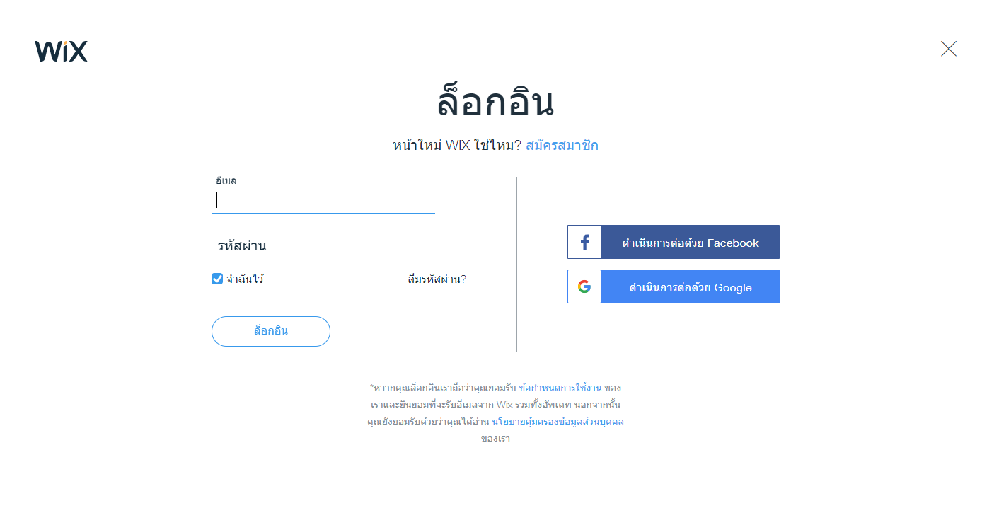
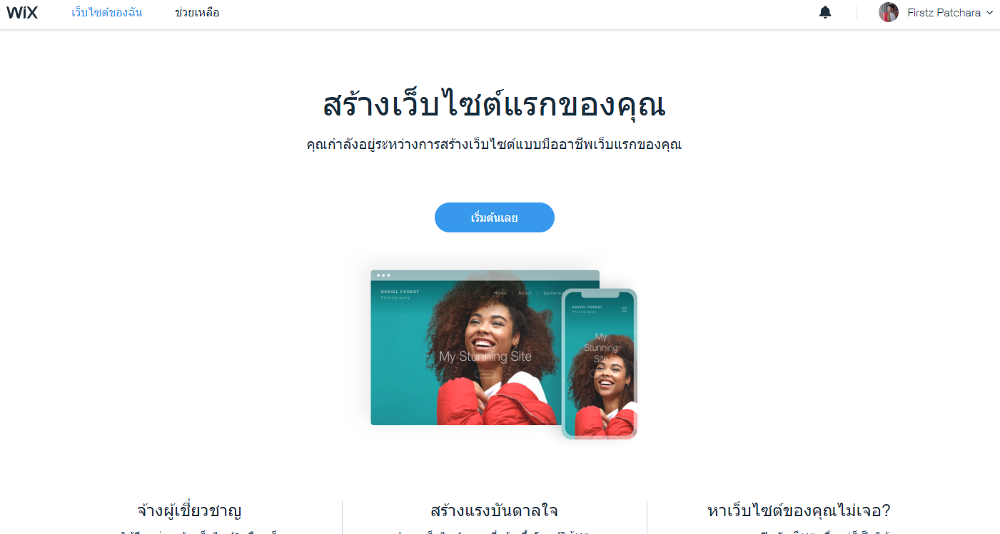
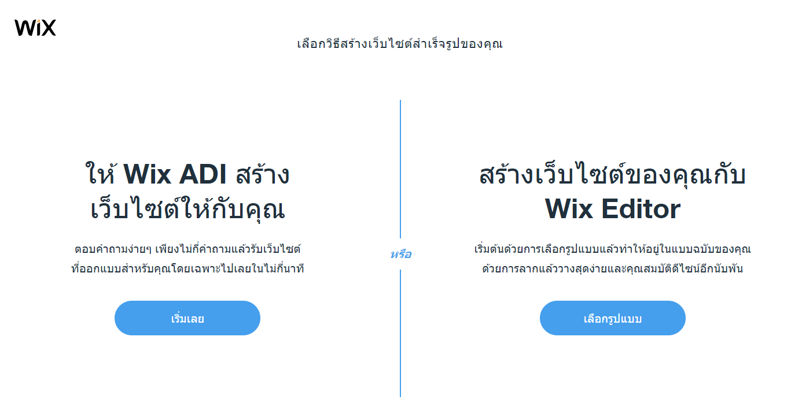
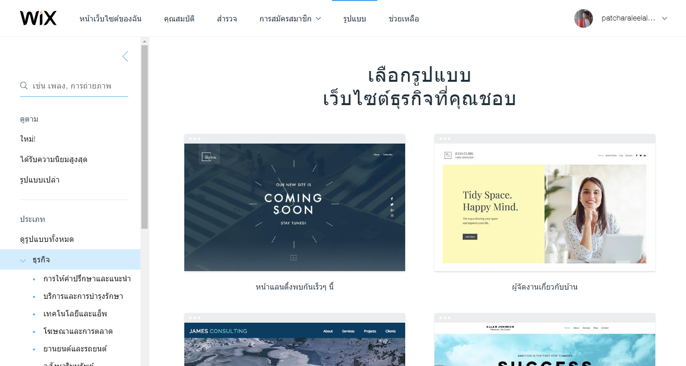
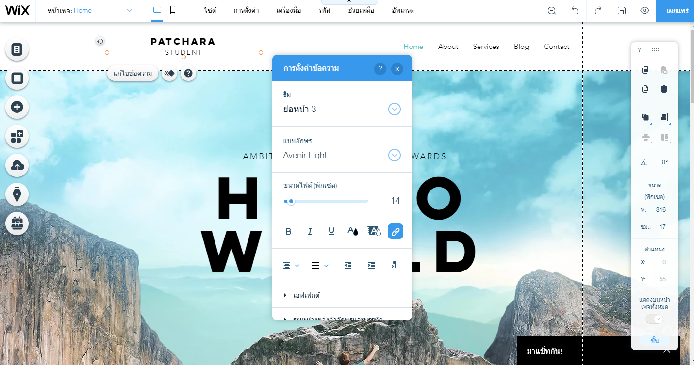
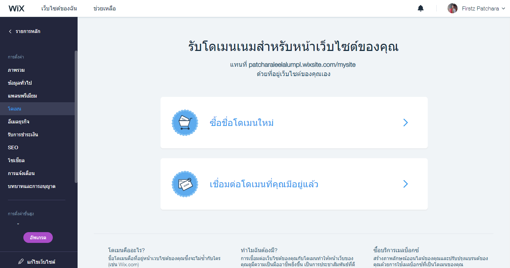

แค่คลิก ลาก วาง ก็บันดาล Website ได้ง่ายๆในพริบตาด้วย wix.com
อยากทำเว็บ แต่ไม่มีเวลาเรียนรู้ ไม่มีหัวด้านการออกแบบ ไม่มีเงินในการไปจ้างในการพัฒนา ปัญหาเหล่านี้เกิดขึ้นได้กับทุกคน ดังนั้นจึงมีผู้พัฒนาเว็บหัวใส สร้างเว็บแบบสำเร็จรูปให้เราสามารถเลือกรูปแบบเว็บได้ตามความต้องการ ซึ่งปัจจุบันก็เห็นทั้งของไทยและต่างประเทศ สำหรับต่างประเทศ เว็บ Wix.com คือหนึ่งเว็บไซต์ที่ให้สร้างเว็บแบบไม่ต้องมีความรู้การทำเว็บ ก็สามารถสร้างได้ภายในไม่กี่นาที และ Wix ก็เป็นอีกหนึ่งเว็บที่มีคนนิยมใช้กันทั่วโลก
ดังนั้นผมจะมาแสดงวิธีการใช้งาน Wix ให้ได้ชมกันครับ
เริ่มจากเราเข้ามาเว็บ wix.com
จากนั้นทำการ Login เข้าระบบของ Wix ซึ่งจะสังเกตได้ว่าสามารถ Login ได้ทั้ง Facebook, Google Mail หรือ บัญชี WIX โดยตรง
เมื่อทำการ Login เข้ามาจะเห็นได้ว่ามีปุ่มในการให้สร้าง Website ก็ทำการเลือกแล้วเราจะสามรถสร้าง Website ได้ทันที
เมื่อกดเข้ามาแล้วทำการเลือก Categories จะเห็นได้ว่า มีการให้เลือกว่าเราจะสร้างเว็บด้วยอะไร ซึ่งในที่นี้จะลองสร้างด้วย WIX Editor
จากนั้นก็จะมี Theme ขึ้นมาให้เราเลือกมากมาย เราสามารถเลือกอันไหนก็ได้ตามใจชอบเลย ซึ่งถือว่าสะดวกมากๆ
จากนั้นเราก็ามารถ custom เว็บเราได้ง่ายๆด้วนแค่การลากวาง รูป ข้อความ ต่างๆตามความต้องการของเรา เมื่อเราทำการตกแต่งเว็บจนพอใจแล้วเราก็แค่กดเผยแพร่เราก็จะได้เว็บมาใช้งานแล้ว
ซึ่งถือว่าเร็วมากๆในการสร้างเว็บไซด์ที่ไม่ได้มีความซับซ้อน หากใครกำลังมองหา เครื่องมือใช้สร้างเว็บไซด์ง่ายๆละก็ WIX.com ก็ถือว่าเป็นตัวเลือกที่ไม่เลวเลย
โดยเว็บที่ผมได้ลองสร้างออกมาเป็นเว็บเกี่ยวกับ Profile และเหตุผลที่ผมลองสร้างเว็บแนวนี้ก็เพราะเรากำลังเข้าสู่ยุคที่เทคโนโลยีกำลังเข้ามาเปลี่ยนแปลงทุกอย่างการที่เรามีโปรไฟล์อยู่บน internet คงเป็นเรื่องที่ดีไม่น้อย โดยสามารถเข้าไปลองดูได้ ที่ลิ้งนี้ครับ https://patcharaleelalumpl.wixsite.com/mysite จะเห็นได้ว่า เว็บที่เราสร้างบน wix.com URL ของเว็บที่สร้างจะเป็นของที่ wix generate ขึ้นมาโดยที่หากเราต้องการ ที่จะผูก Domain name ของตนเองก็สามารถทำได้เช่นกันโดยสามารถกดเข้าไปผูก domain ได้ที่หน้า Dashboard ของตนเอง ซึ่งถือว่าสะดวกเอามากๆ
โดย Wix เองถือว่าเป็น Web Builder ที่เรียกได้ว่าครบครัน ตั้งแต่การสร้างเว็บไปจนถึงการทำให้เว็บพร้อมใช้งานบน Browser เลยจริงๆ โดยภาพรวมแล้ว ความง่ายของ wix นั้นถือว่างายมากๆ คิดว้าคนที่ไม่เคยทำเว็บมาก่อนหรืออ่อนเรื่อง Design โดยสังเกตจากเว็บผมได้คือ การออกแบบเน้นๆไปแนวๆ landing page ปกติ ที่แสดงเนื้อหาของส่วนตัวไว้ในเว็บการอ่านง่ายน่าจะถือว่าเป็นสำคัญ แน่นอนว่าผมเองก็ไม่ได้ดีไซน์ออกมาสวยงามแต่ Wix ก็ช่วยให้ผมจัดว่าง content รูปได้ง่ายๆด้วยการแค่ลากและวาง
ยังไงก็ตามแม้ว่า wix จะตอบโจทย์เว็บที่ต้องการ business logic ซับซ้อน ไม่ได้แต่ก็ถือว่าเป็นเครื่องมือในการสร้างเว็บที่ได้เร็วและใช้งานง่ายอีก 1 หนึ่งตัวที่น่าจับตามองจริงๆ